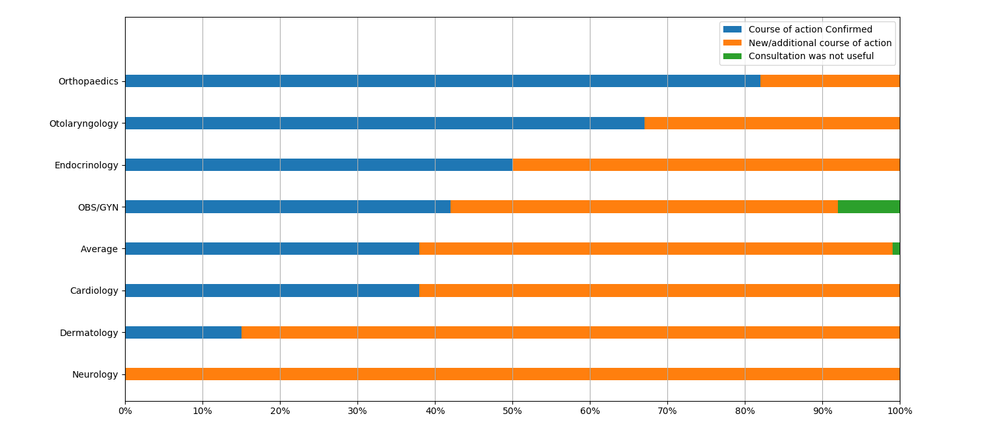

Telemedicine is a novel method of providing healthcare that is becoming increasingly popular with the rapid improvement of information and communication technologies. Telemedicine uses modern information and communication technology to augment and improve healthcare systems and is especially useful in sparsely populated regions where traditional healthcare methods are expensive or unavailable. Telemedicine is defined by the World Health Organization [11] as:
“The delivery of health care services, where distance is a critical factor, by all health care professionals using information and communication technologies for the exchange of valid information for diagnosis, treatment and prevention of disease and injuries, research and evaluation, and for the continuing education of health care providers, all in the interests of advancing the health of individuals and their communities”
Telemedicine has been implemented effectively around the world in a variety of forms. The applications of telemedicine are broad but only a few branches will be discussed here. The following uses could be beneficial to improving healthcare in Canada’s north.
Specialists can make diagnoses from images and notes provided by primary care providers allowing for faster diagnoses.
Specialist advice can be accessed quicker without the need to travel to a referral centre.
Primary care providers can be advised to better courses of action when prescribing treatment.
Primary care providers can be continually educated in remote locations to improve their effectiveness in delivering health care.
Elderly and patients with chronic illness can be monitored from their homes. Patients can also be educated in performing routine treatments on their own.
Psychiatric appointments can be conducted at a distance allowing for more frequent visits and check-ups.
Examining different ways that telemedicine has already been implemented in Canada will give a better idea of how telemedicine can be a benefit to Northern Healthcare.
One implementation of telemedicine is the Champlain BASE project. It is a collaborative project between the Ottawa hospital, Bruyere Research Institute, Winchester District Memorial Hospital, and Champlain Local Health Integration Network. eConsultations are used to improve access to medical specialists for primary care providers. Some specialities that have participated in the project include dermatology, infectious disease, pediatrics, and psychiatry [13].
eConsult is a secure web-based tool that allows primary care providers to submit consultation request to one of the participating specialities. Then within 7 days, through eConsult a medical specialist is able to:
These features allow healthcare providers to reduce face-to-face visits, access specialist advice quicker, make faster and more accurate diagnoses, and begin treatments sooner [13].
From 2010 to 2015 the Champlain BASE project has reported the following statistics:
The Champlain BASE project has shown that eConsultations and telemedicine can be effective in improving patient care. Patients were required to travel less, specialist advice was received quicker, and more effective medical care was able to be provided [13].
eConsult has also been implemented in Nunavut on a small scale. A cross-sectional study examined the success of 165 eConsult cases in Nunavut between August 2014 and April 2016. The chart below shows the effectiveness of the consultations in 7 specialities.
On average 99% of eConsult cases were considered beneficial. In 38% of cases the current course of action was confirmed by the specialist to be the most effective plan and should be prescribed or continued. 61% of consultations resulted in a better course of action being suggested to the primary care provider. Overall the implementation of eConsult allowed patients to receive more effective healthcare from their local health centre.